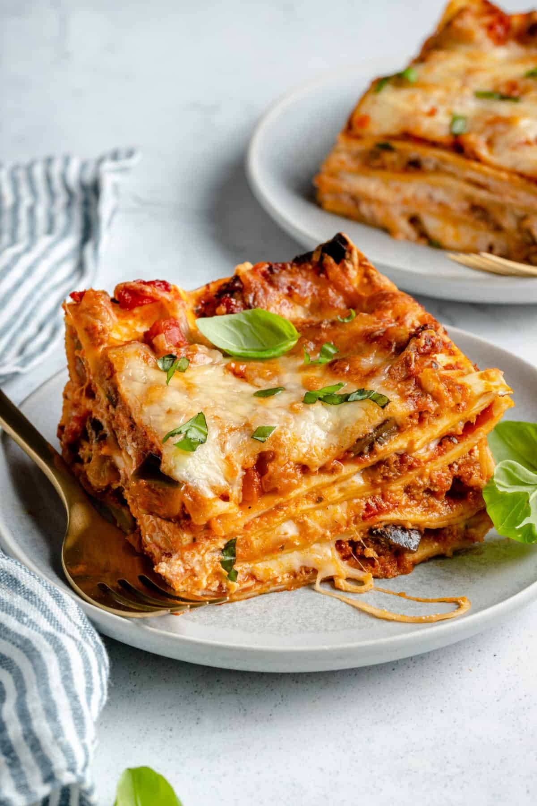

Vegan Lasagna

Description
A warm and savory vegan comfort lasagna.
Ingredients
- 16 lasagna sheets
- 1 ½ tbs olive oil
- 1 medium sized white onion diced
- 5 cloves garlic minced
- 1 large eggplant 14 ounces, evenly cut and cubed
- ¾ tsp sea salt
- ½ tsp ground black pepper
- 9-12 ounces vegan crumbles
- 42 ounces jar or can of tomato sauce
- 2 cups vegan ricotta
- 3 cups shredded vegan mozzarella
- basil for garnish optional
Directions
- Preheat oven to 350F. Bring a pot of salted water to a boil, then cook lasagna noodles according to directions on box.
- Set aside a cup of vegan mozzarella cheese (top layer)
- While pasta is boiling, heat 2 tbps of olive oil in a pan over medium heat. Add onions & garlic, saute for 5 mins. Add chopped eggplant, salt and pepper, then cook for another 10 mins.
- Add in vegan meat crumbles, stir to combine. Cook for 3 mins. Reduce heat to medium-low, add in the tomato sauces, stir for 3 minutes.
- In a 13"x9" pan add 1/2 cup of the crumble/marinara sauce mixture on the bottom and spread with spatula. Cover bottom with 4 lasagna noodles lengthwise, overlapping a bit.
- Add more of the crumble/marinara sauce mixutre (aim to have enough for 4 even layers), then add 1/3 of the vegan ticotta, and 1/3 of the vegan mozzarella.
- Repeat until you've reached the top later. Add the remaining marinara sauce, then sprinkle the leftover vegan mozzarella over it.
- Cover the pan with foil and bake in the oven for 30 mins. Then broil for 3-5 mins on low to brown the toppings. Finally, top with basil and allow to sit for 10 mins before serving.